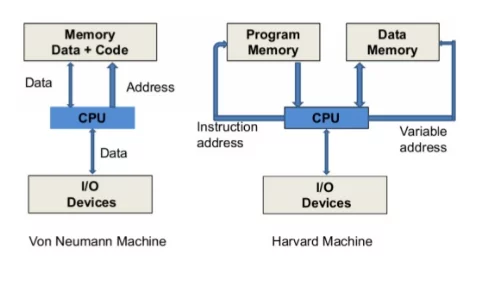

Introduction to CPU Architecture and Assembly Programming: Concepts and Practical Examples
Jun 01, 2024 | Author: Maiquel Paiva (@untw0)
Introduction
In this post, we'll explore the CPU architecture and how it performs basic operations using Assembly language. We'll cover concepts like registers, data manipulation, and control flow instructions, with Assembly language examples and explanatory diagrams.
About CPU
The CPU is the brain of the computer, performing logical and arithmetic operations on data. It has units such as the Control Unit and the Arithmetic Logic Unit, and uses internal registers to temporarily store data and instructions. The speed of the CPU, determined by its internal clock, directly affects its processing power. There are several CPU architectures, such as x86, ARM, and Power, each with their own characteristics. x86 CPUs, manufactured by companies such as Intel and AMD, are common in PCs and servers.
Computer Architecture

Von Neumann Architecture
In short: CPU and Shared Memory. The CPU uses the same memory to store data and instructions. There is a single bus for transferring data and instructions, which can lead to "Von Neumann bottleneck", limiting the speed of the CPU by the speed of the memory.
Harvard Architecture
In short: Separate Memory. The CPU has separate memories for data and instructions. There are separate buses for instructions and data, allowing simultaneous access, which potentially increases processing speed.